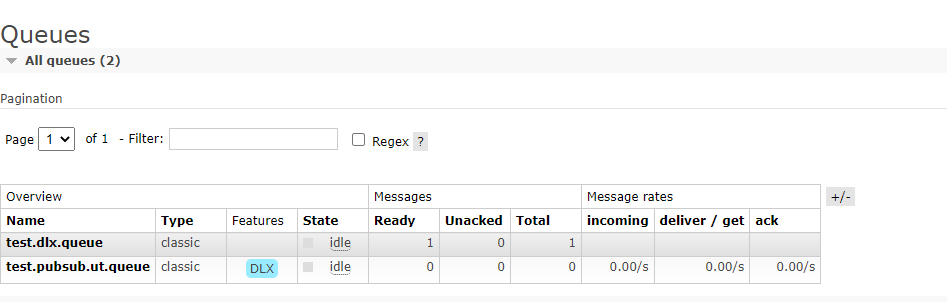
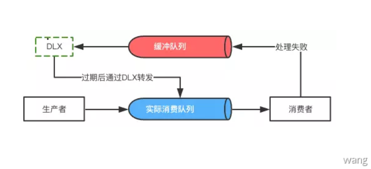

死信队列
死信队列：DLX，dead-letter-exchang，利用DLX，当消息在一个队列中变成死信 (dead message) 之后，它能被重新publish到另一个Exchange，这个Exchange就是DLX。
死信判断条件
- 消息被拒绝(
basic.reject/basic.nack)，并且requeue = false - 消息
TTL过期 - 队列达到最大长度
死信处理过程
- DLX也是一个正常的Exchange，和一般的Exchange没有区别，它能在任何的队列上被指定，实际上就是设置某个队列的属性
- 当这个队列中有死信时，RabbitMQ就会自动的将这个消息重新发布到设置的Exchange上去，进而被路由到另一个队列
- 可以通过监听这个死信队列的消息做相应的处理
死信队列设置
首先设置死信队列的 exchange 和 queue，然后进行绑定
1 | string dlxExchangeName = "test.dlx.exchange"; |
定义业务队列，并设置死信参数
1 | // 声明队列时添加死信参数 |
Pub 完整代码如下：
1 | /// <summary> |

消费完毕，死信queue加了一条数据。
实际环境还需要对死信队列进行一个监听和处理，具体的处理逻辑和业务相关，这里只简单演示死信队列是否生效。
延时队列
延迟队列就是进入该队列的消息会被延迟消费的队列。而一般的队列，消息一旦入队了之后就会被消费者马上消费
延迟队列能做什么？延迟队列多用于需要延迟工作的场景。最常见的是以下两种场景：
- 延迟消费。比如：用户生成订单之后，需要过一段时间校验订单的支付状态，如果订单仍未支付则需要及时关闭订单
- 延迟重试。比如消费者从队列里消费消息时失败了，但是想要延迟一段时间后自动重试
实现思路
实现依赖于RabbitMQ的两个特性
Time-To-Live Extensions
RabbitMQ允许我们为消息或者队列设置TTL（time to live），也就是过期时间。TTL表明了一条消息可在队列中存活的最大时间，单位为毫秒。也就是说，当某条消息被设置了TTL或者当某条消息进入了设置了TTL的队列时，这条消息会在经过TTL秒后“死亡”，成为Dead Letter。如果既配置了消息的TTL，又配置了队列的TTL，那么较小的那个值会被取用。更多资料请查阅官方文档。
Dead Letter Exchanges
被设置了TTL的消息在过期后会成为Dead Letter。
之前说过在RabbitMQ中，一共有三种消息的“死亡”形式：
- 消息被拒绝。通过调用
basic.reject或者basic.nack并且设置的requeue参数为false - 消息因为设置了
TTL而过期 - 消息进入了一条已经达到最大长度的队列
如果队列设置了Dead Letter Exchange（DLX），那么这些Dead Letter就会被重新publish到Dead Letter Exchange，通过Dead Letter Exchange路由到其他队列。
延迟消费
生产者产生的消息首先会进入缓冲队列（图中红色队列）。通过RabbitMQ提供的TTL扩展，这些消息会被设置过期时间，也就是延迟消费的时间。等消息过期之后，这些消息会通过配置好的DLX转发到实际消费队列（图中蓝色队列），以此达到延迟消费的效果。
延时重试
消费者发现该消息处理出现了异常，比如是因为网络波动引起的异常。那么如果不等待一段时间，直接就重试的话，很可能会导致在这期间内一直无法成功，造成一定的资源浪费。可以将其先放在缓冲队列中（图中红色队列，可以理解为重试定义的exchange），等消息经过一段的延迟时间后再次进入实际消费队列中（图中蓝色队列），此时由于已经过了“较长”的时间了，异常的一些波动通常已经恢复，这些消息可以被正常消费。

RabbitMQchannel.basicNack()能够让消息回到队列中，这样可以实现重试。但是无法明确重试次数，如果当前的消息一直重试的话，则后面的消息就会堆积起来，导致后面的消息无法消费。这是一个致命的缺点。因此需要设置重试次数来解决类似问题。
- 使用
redis或者mongo等第三方存储当前重试次数 - 在
header中添加重试次数,使用channel.basicPublish()方法重新将消息发送后将重试次数加1
可以设置重试次数到达阈值时转发到指定的exchange。
代码示例：
https://github.com/wangpengliang815/CodeSnippet
参考：